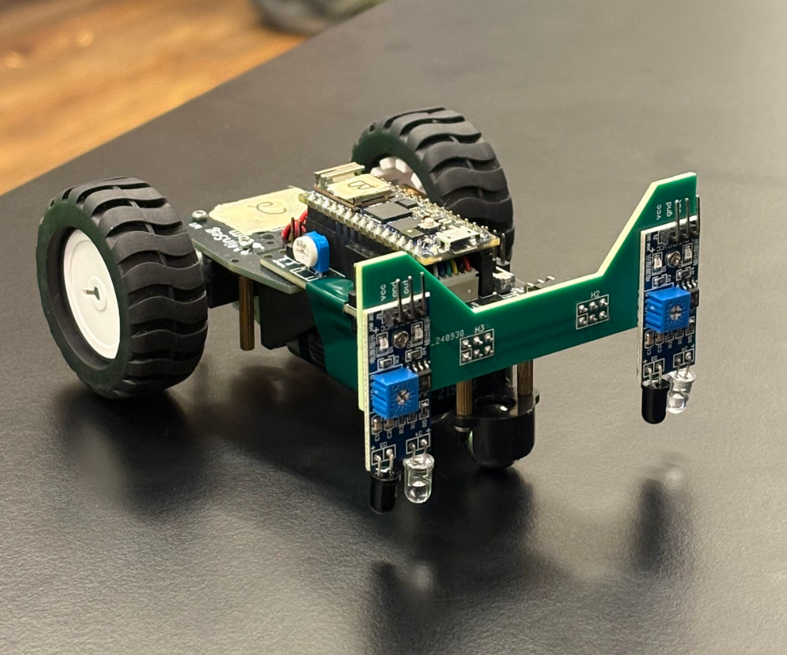
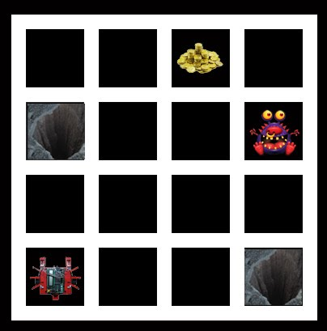

By Jocelyn Adelstein, Charles Agnew, and Arunabh Ramesh
Featuring Dave the robot:
In Wumpus World, Dave must retrieve the gold from the evil Wumpus. Wumpus World consists of a 4x4 grid, such as the one shown below.
If Dave drives into the pits or into the Wumpus itself, Dave immediately loses. Unfortunately, Dave does not know the state of the squares around him. Instead, Dave is only told if an adjacent square is dangerous: he feels a breeze if there is a pit, he sees a glitter if there is gold, and he senses a smell when there is the Wumpus. Dave is not told which square this sense is coming from—just that there is or there is not something nearby.
To win, Dave must successfully collect the gold and return back to the start (the bottom left corner of the grid). Sometimes, the Wumpus is blocking the path to the gold; in that case, Dave can try to kill the Wumpus with an arrow. However, he can only attempt this once.
This website documents our efforts to help Dave succeed.